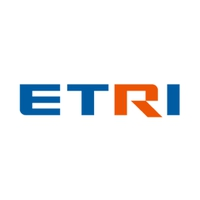
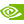

Somi Jeong
Applied AI Engineer · Agentic AI · Multimodal Systems · Cloud Deployment
Applied AI Engineer building agentic workflows, multimodal AI systems, and cloud deployed AI products. Currently pursuing my M.Eng. in AI Systems at Hanyang University while shipping practical AI systems across enterprise automation, healthcare coordination, accessibility, and public-data intelligence.
Experience
3 roles · 2023–2026
AI Engineer (Research Assistant)
SK Innovation · mySUNI Lx & Tech
- Internalized a vendor handoff LMS codebase into an internal sandbox, enabling direct build, run, and development without waiting 2-3 months for external vendor cycles.
- Designed and built 15+ learning and operations automation systems, from a team-standard LLM wrapper to autonomous crawling across 21 external platforms.
- Built an agentic localization pipeline so Japanese RHQ teams could reuse Korean mySUNI learning content with less manual translation work.
Data Analyst Intern · Full-stack Developer
Gumi Electronics & Information Technology Research Institute (GERI)
- Built a full stack FastAPI prototype that brings fragmented disaster-safety public data into one analysis and visualization interface.
- Modeled a psychological support chatbot for disaster trauma scenarios, shaping LLM responses around domain-sensitive user needs.

Research Intern
Electronics and Telecommunications Research Institute (ETRI)
- Developed an integrated CCTV monitoring system for real-time illegal dumping detection, tracking, and counting with YOLOv5x, SORT/StrongSORT, Kalman filtering, and Hungarian matching.
- Extended object detection into behavior tracking with dynamic trajectory prediction and time-based analysis.
- Integrated real-time dynamic blur for privacy-preserving video analytics.
Teaching
Computer Science Tutor — Ministry of Science and ICT
Science Gifted Education Center · Computer Science TA
Teaching assistant for the national online pre-education program for gifted science students, hosted by the Ministry of Science and ICT and jointly operated by 27 universities.
Teaching Assistant · Andong National Univ. SW Convergence
Software course TA · SW convergence workshop assistant instructor
Supported foundational software courses, regional AI education workshops, and gifted education programs at Andong National University.
Activities & Volunteering
3 global rolesHeckel.ai · Fellow Editor (Inaugural Issue Contributor)
AI Webzine · Global remote collaboration
Joined as a Fellow Editor for the inaugural April 2026 issue, reviewing and curating AI research and industry trend articles for broader audiences.
Technovation Girls — Global AI Project Judge
Google Women Techmakers partner program · Global volunteer
International judge for a global AI/app innovation challenge, evaluating submissions from girls aged 8-18 across 60+ countries on technical quality and social impact. Completed the 2026 season as a Judge Gold, receiving a Certificate of Recognition for reviewing 11+ projects.
Women in Cloud · Member
Member of the global Women in Cloud community, focused on cloud and AI career networking.
Selected Projects
Full list at portfolio →CareFlow — Top 100 @ Google Cloud Gen AI Academy APAC · Cohort 1
Multi-agent post-visit care coordination system for chronic disease patients across APAC. Root Agent orchestrates eight specialized agents with Google ADK. Top 100 finalist from 192,660+ developers across 12+ countries.
BridgeCast AI — Microsoft × Women in Cloud AI Innovation Challenge
Real-time bidirectional sign-language and speech communication system for 430M+ people with hearing loss. 15 Azure services · Uni-Sign (ICLR 2025) · 3D signing avatar. Responsible AI built in with Fitzpatrick fairness and WCAG 2.1 AA.
Shellter — 2nd Place @ NVIDIA × Gyeonggi LLM Program
Full stack AI legal assistant for foreign tenants who need rental contracts reviewed in their native language. RAG · Upstage Groundedness Check · 6 languages · automated landlord risk lookup.
Intelligent Pollution Source Backtracking Platform — Minister of Environment Award
Combined MODFLOW and GNN analysis to infer groundwater contamination source location and type. Integrated nine public datasets at city/county/district level and proposed a shift from reactive response to proactive management.
Blind_crossWalk — KIIT Gold + KCI First Author
Crosswalk safety system for visually impaired pedestrians. Runs with a single phone camera using Few-shot YOLO, Grounding DINO, and monocular distance estimation without LiDAR, stereo cameras, or network dependency. Field-tested in real pedestrian environments.
Open Source
10 merged


Awards
Top 100 Finalist · Google Cloud Gen AI Academy APAC ↗
192,660+ developers · 12+ countries
Grand Prize · Minister of Environment Award
2025 National Groundwater Big Data Competition · Ministry of Environment
2nd Place · NVIDIA × Gyeonggi Business & Science Accelerator
Shellter — rental fraud prevention chatbot
Excellence Award · WISET AI Data Analysis Program
ARTIQUE — AI art-auction docent
Grand Prize · SW-Centered University Yeongnam Regional Hackathon
Museum AI docent · MSIT · IITP · Andong National · Dong-A University
Best Paper Award · Korea Multimedia Society (KMMS)
Harmful bird detection in orchards · first author
Finalist · Daegu Public Data Startup Competition
Daegu Digital Innovation Promotion Agency
4 Gold, 1 Silver, and 5 Bronze Awards · Korea Institute of Information Technology (KIIT)
13 undergraduate papers across accessibility, autonomous driving, harmful bird detection, and LLM-RAG; multiple first-author papers
Yeongcheon Mayor Award · 2024 Public Data Competition
NLP-based plant care management
Grand Prize · 3rd Smart AI/SW Competition
Personalized eyewear recommendation system · Andong National × Jeju National University
Grand Prize · Humanoid AI Robot Camp
Andong National University regional job creation program
Best Presentation Award · Korea Game Society Fall Conference
Game industry analysis in the digital era
Publications & Patents
26 papers · 2 patentsUnder Review 1
Delayed Protection: Latent Neutrality in LLM-Mediated Multi-User Conflict
E. Lee, J. Nam, S. Jeong, I. Ryou · KDD 2026 (Under Review)
KCI-Indexed Journal Papers 3
First author · A Semi-Supervised YOLO Framework Based on Few-Shot Learning and Grounding DINO for Visually Impaired Pedestrian Safety
J. of KIIT
First author · Design of a Survival RPG Game with Generative Agent NPCs
J. of Digital Contents Society
First author · Groundwater Contamination Source Backtracking and Type Inference System via Hydraulic Modeling and Spatial Graph Analysis
J. of KIIT (Under Revision)
KIIT (Korea Institute of Information Technology) 11
[Gold] · First author · Few-Shot Learning and Grounding DINO Integrated YOLO Optimization Framework for Visually Impaired Pedestrian Safety
[Gold] · First author · YOLOv8-CNNLSTM Real-Time Hazard Detection and Prediction for Worker Safety in Smart Manufacturing
[Gold] · First author · Comparative Study of Harmful Bird Detection Using Grounding DINO and YOLOv8
[Gold] · Edge Device-Based Harmful Bird Detection System Model Optimization (co-author)
[Silver] · First author · Factor Analysis of Green Signal Time for AI-Based Crosswalk Assistance for Visually Impaired
[Bronze] · First author · Correlation Analysis Between Crosswalk Characteristics and Safety Facilities for the Visually Impaired
[Bronze] · First author · Multimodal Situation Awareness and Context Reasoning for Autonomous Vehicle Safety
[Bronze] · First author · LLM-RAG Based Real-Time Personalized Travel Recommendation Web Service Design
[Bronze] · First author · Specialized Data Augmentation and Vision Transformer-Based Image Classification for Autonomous Driving
[Bronze] · First author · Design and Implementation of Education Resource Recommendation System by Programming Language
[Bronze] · First author · Social Work Experience in VR: Dementia Prevention Game Design Using VR
KMMS (Korea Multimedia Society) 4
[Best Paper Award] · First author · Harmful Bird Detection in Orchards Using Data Augmentation
Comparison of Unsupervised Object Detection Models for Orchard Bird Detection Using Jetson Nano (co-author)
First author · GPT Fine-Tuning Based University Admission Information Guidance System Design
A Study on Cultural Heritage Asset Acquisition Using Photogrammetry (co-author)
Korean Game Society 3
[Best Presentation] · First author · Game Industry Analysis in the Digital Era: Insights Through Time-Series, Clustering, and Association Analysis
First author · Factors Determining Win/Loss in League of Legends: In-Depth Analysis Using EDA and Machine Learning
First author · Design of Generative Agents and Game NPC
Other Societies 3
[Bronze] · Development of Storytelling-Based Tycoon Game (co-author, KDCS)
First author · Video Analysis Component for Real-Time Illegal Dumping Prediction (KICS)
IoT-Based Flood Disaster Prevention and Water Quality Monitoring System (KIPS, co-author)
Patents 2
PN240223 · Autonomous Vehicle with Foldable Cart (Inventor)
Filed through Catholic University of Daegu Industry-Academic Cooperation Foundation · automotive domain
PN240221 · Fire Detection Sensor + Suppression Module Scenario (Inventor)
Filed through Catholic University of Daegu Industry-Academic Cooperation Foundation · automotive domain
Editorial 1
"Legal AI Agents in EU and South Korea" (heckelai.com inaugural issue)
International co-author with Efstathios Iliopoulos (ASEP, Athens)
Education
Master of Engineering · Department of AI Systems
Hanyang University · Graduate School of Applied Artificial Intelligence · Part-time
Expected to graduate Aug 2027
B.S. Computer Engineering · Future Mobility Convergence (Mobility DX)
Andong National University · GPA 4.15 / 4.5
Coursework: Machine Learning · Deep Learning · Computer Vision · NLP · Data Structures · Algorithms · Linear Algebra · Probability & Statistics
Technical Skills
AI / ML
PyTorch · HuggingFace · LangChain · Gemini · Claude · GPT · Multi-Agent · Google ADK · MCP · Agentic RAG · pgvector · LoRA/PEFT
Languages
Python · TypeScript · Java · SQL
Cloud
GCP · Azure · AWS · Cloud Run · Azure OpenAI · Semantic Kernel · FastAPI · Docker · Bicep · ONNX
Frontend
React · Vite · Tailwind · Three.js · Playwright
Data
Airflow · Kafka · Spark · Redis · PostgreSQL
Certifications
22 certs
NVIDIA-Certified Associate · Multimodal Generative AI
Building LLM Applications With Prompt Engineering
Building RAG Agents with LLMs
Building Transformer-Based Natural Language Processing
Efficient Large Language Model (LLM) Customization
Generative AI with Diffusion Models
Rapid Application Development with Large Language Models
Building Agentic AI Applications with LLMs
Computer Vision for Industrial Inspection
Getting Started with AI on Jetson Nano
Fundamentals of Deep Learning

IBM AI Developer Professional
IBM AI Engineering Professional
IBM Data Engineering Professional
IBM Generative AI Engineering Professional
IBM Machine Learning Professional
Generative AI with Azure OpenAI & Semantic Kernel
Innovation Challenge Hackathon March 2026 (Americas Azure Team)
Azure AI Fundamentals (AI-900)
Azure Fundamentals (AZ-900)

Google Analytics Certification (GAC, GA4)
Korean Standards Association · Elice
TOPA Level 1 (Test of Practical Artificial Intelligence)
Korea Data Agency
SQL Developer (SQLD)